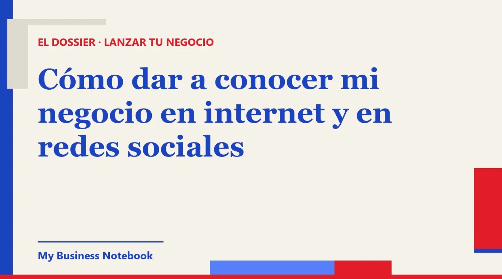

Cómo dar a conocer mi negocio en internet y en redes sociales
Has abierto tu cuenta de Instagram, has subido fotos bonitas y los mensajes no llegan. Suele faltar una pieza: las redes te dan a conocer, pero es en Google donde el cliente comprueba que existes. Aquí tienes cómo montar tu presencia online completa, red por red, y cómo hacer que todo lleve al mismo sitio: a que te escriban.

La respuesta corta
Para dar a conocer tu negocio en internet no necesitas estar en todas partes. Necesitas una base donde te encuentran (tu Perfil de Empresa en Google, unos pocos directorios y una web sencilla) y una o dos redes sociales donde enseñas tu trabajo con constancia.
Lo que casi nadie cuenta es cómo encaja todo. Las redes atraen miradas, pero el cliente que duda te busca en Google antes de escribirte. Si ahí no encuentra nada, o encuentra un teléfono antiguo, se va con otro.
Cómo dar a conocer mi negocio en internet: el mapa completo
Piensa en tu presencia online como una casa con tres plantas. Cada una tiene su función, y ninguna sustituye a las otras.
- Los cimientos: donde te buscan. Google y su mapa, Apple Maps, los directorios de tu sector. Aquí llega la gente que ya sabe lo que quiere: «uñas acrílicas Getafe», «fontanero urgente Sevilla».
- La planta de exposición: donde te descubren. Instagram, TikTok, Facebook. Aquí te encuentra gente que no te buscaba. Es escaparate, no directorio.
- La puerta: donde hablas con el cliente. WhatsApp Business, tu teléfono, el formulario de tu web. Todo lo demás tiene que llevar hasta aquí sin rodeos.
El error típico es empezar por el segundo piso: abrir Instagram, subir veinte fotos y esperar. Empieza por los cimientos, porque son lo que convierte una visita curiosa en una llamada.
Primero, los cimientos: Google y los directorios
Tu Perfil de Empresa en Google es gratuito y es lo primero que debes tener. Google lo dice en su ayuda: puedes añadir o reclamar tu empresa sin coste. Si aún no lo has hecho, sigue nuestra guía para aparecer en Google Maps gratis, paso a paso.
Después vienen los directorios: Apple Maps a través de Apple Business, Bing Places, y los portales de tu sector (reservas para peluquerías y centros de estética, portales de reformas, guías de restaurantes, la web de la asociación de comerciantes de tu barrio).
Los mismos datos, escritos igual, en todas partes
Nombre, dirección y teléfono deben coincidir letra por letra en cada sitio, también en la biografía de tus redes. Un número antiguo en un directorio olvidado es un cliente que llama y no contesta nadie.
Apunta en una hoja dónde estás dado de alta y con qué usuario. Diez fichas bien cuidadas valen más que cincuenta a medio rellenar.
Cómo dar a conocer mi negocio en redes sociales sin volverte loco
Elige una red principal, la que usan tus clientes, y como mucho una segunda. Publicar poco pero cada semana funciona mejor que un mes intenso seguido de silencio.
- Enseña el trabajo, no el anuncio. El antes y el después, el pedido que sale, el cliente contento (con su permiso). Un vídeo corto de tus manos trabajando dice más que «calidad y profesionalidad».
- Di siempre dónde estás. Barrio o ciudad en la biografía, en los textos y en la ubicación de cada publicación. Una cuenta preciosa sin ciudad no te trae clientes de tu zona.
- Un solo botón de contacto claro. WhatsApp o reserva, pero que se vea a la primera.
- Contesta rápido. Un mensaje directo que responde al día siguiente suele ser un cliente perdido.
Cómo dar a conocer mi negocio en Instagram
Instagram es escaparate: funciona muy bien para lo que entra por los ojos (estética, uñas, peluquería, comida, moda, decoración, reformas). Pásate a una cuenta profesional para tener botones de contacto y estadísticas.
Cuida tres cosas antes de pensar en seguidores. Un nombre de usuario que se parezca al de tu negocio. Una biografía con qué haces, dónde y cómo pedir cita. Y las historias destacadas ordenadas: precios o servicios, trabajos, cómo llegar, opiniones.
Sigue y comenta a negocios de tu barrio y a cuentas locales. En un negocio de proximidad, que te conozcan cien vecinos vale más que mil seguidores de otra provincia.
Cómo dar a conocer mi negocio en Facebook
Facebook sigue siendo útil por dos motivos: la página de empresa, que mucha gente consulta para ver horarios y opiniones, y los grupos locales. Crea la página con los mismos datos que en Google.
En los grupos del barrio o del pueblo, sé útil antes que comercial. Responde cuando alguien pide una recomendación de tu sector, sin copiar y pegar publicidad. Lee siempre las normas del grupo: muchos solo permiten anuncios en días concretos.
TikTok sigue la misma lógica que Instagram, con vídeos más espontáneos. Si te sientes cómodo hablando a cámara, un vídeo de 30 segundos explicando un truco de tu oficio puede llegar lejos. Si no, no te fuerces: una red bien llevada basta.
WhatsApp Business: la puerta de entrada
Casi todo lo anterior acaba en un mensaje. La app WhatsApp Business separa tu número de empresa del personal y, según Meta, te permite tener un perfil de empresa con tu información, un catálogo de productos o servicios, un mensaje de bienvenida y respuestas automáticas cuando no estás.
Pon ese número en la biografía de tus redes, en tu ficha de Google y en tu web. Así el cliente siempre acaba en el mismo sitio, y tú no pierdes conversaciones repartidas entre cinco aplicaciones.
Ojo con los mensajes masivos
WhatsApp no es un atajo para mandar publicidad a cualquiera. La AEPD recuerda que por correo electrónico o mensajería solo pueden enviarte publicidad sin tu consentimiento si ya hay una relación contractual previa y se trata de productos o servicios similares.
Y en cada mensaje tiene que haber una forma sencilla y gratuita de decir «no quiero más». Escribe a tus clientes, no a listas compradas.
Cómo dar a conocer mi negocio de uñas (y cualquier servicio de belleza)
Es de las búsquedas más frecuentes, y el caso sirve para todo el sector de la estética. El orden que mejor funciona:
- Perfil de Empresa en Google con la categoría precisa, fotos reales de tus trabajos y reseñas. Si atiendes en casa de la clienta, indica zona de servicio en lugar de dirección.
- Instagram como portfolio. Fotos con buena luz natural, siempre del mismo estilo, y los diseños agrupados por tipo en destacadas.
- Reserva sin fricción: WhatsApp Business o una plataforma de citas, enlazada desde todas partes.
- Colaboraciones locales: una peluquería, un centro de estética o una tienda de novias del barrio pueden mandarte clientas, y tú a ellos.
Pide la reseña al terminar, cuando la clienta se mira las manos contenta. Google permite pedirla con un enlace o un código QR, pero prohíbe dar descuentos o regalos a cambio: lo considera interacción falsa.
Cómo aparecer mi Instagram en Google
La forma más fiable es enlazarlo desde los sitios que Google ya lee de ti. En tu Perfil de Empresa puedes añadir enlaces a Facebook, Instagram, LinkedIn, Pinterest, TikTok, X y YouTube, uno por red, aunque Google avisa de que esta función solo está disponible en algunos territorios.
Enlaza también tus redes desde tu web, y la web desde la biografía de tus redes. Y usa el mismo nombre en todas partes: cuando alguien busque tu negocio, será más fácil que Google relacione tu cuenta con tu ficha.
¿Necesito web o blog?
No para empezar, pero ayuda mucho. Una web sencilla es el único sitio de internet que es tuyo: no depende de un algoritmo ni de que una red cambie sus normas.
Con una página basta al principio: qué haces, en qué zona, precios orientativos o cómo pedir presupuesto, fotos reales y un formulario de contacto. Un blog con respuestas a las dudas de tus clientes («cuánto dura un esmaltado semipermanente», «qué licencia necesito para reformar un baño») te trae visitas desde Google con el tiempo.
Cómo aparecer en la IA de Google
Google lo explica en su documentación para webmasters: no hay requisitos adicionales para aparecer en las vistas creadas con IA ni en el modo IA, ni hace falta ninguna optimización especial. La página tiene que estar indexada y poder mostrarse en la Búsqueda con un fragmento.
Traducido: lo que te hace visible en Google te hace visible en sus respuestas con IA. Contenido útil escrito para personas, una web que Google pueda leer, una ficha completa y datos coherentes. Desconfía de quien te venda un «posicionamiento en la IA de Google» garantizado. Google también avisa de que cumplir todo no implica que vaya a mostrar tu contenido.
Cómo hacer para dar a conocer mi negocio: el plan de un mes
- Semana 1: Perfil de Empresa creado y en verificación, WhatsApp Business configurado, datos idénticos apuntados en una hoja.
- Semana 2: cuenta profesional en tu red principal, biografía completa, primeras nueve publicaciones de trabajos reales. Alta en Apple Business, Bing Places y dos o tres directorios de tu sector.
- Semana 3: web de una página, enlazada desde la ficha y las redes. Primeras reseñas pedidas a clientes reales.
- Semana 4: preséntate a cinco negocios complementarios de tu zona. Revisa qué ha funcionado y quita lo que no.
Después, el trabajo es de mantenimiento: publicar cada semana, responder reseñas, corregir cualquier dato que cambie en todos los sitios a la vez.
La herramienta que mantiene todo en orden
Lo más pesado no es montar la presencia online, es mantenerla: directorios que se quedan viejos, reseñas sin responder, clientes potenciales apuntados en una libreta. Para eso recomendamos Kaptor, una plataforma pensada para negocios que empiezan.
Kaptor
Kaptor junta en un mismo espacio lo que normalmente harías con varias herramientas:
- Directorios: te da de alta en los que cuentan para tu país y tu sector (más de 120 referencias), con los mismos datos en todas partes, seguimiento ficha por ficha y avisos cuando un dato se queda desactualizado.
- Perfil de Empresa en Google: te ayuda a crearlo o reclamarlo, te señala los campos que faltan y te ayuda a pedir y seguir las reseñas.
- Web o blog: si no tienes web, genera una con formulario de contacto. Si ya la tienes, genera un blog que enlaza con ella para atraer visitas desde Google. El plan Growth añade una auditoría SEO con IA.
- Prospección: si vendes a otras empresas, te enseña negocios por sector y zona, con datos de contacto, ordenados por IA del más caliente al más frío.
- Correos: salen desde tu dirección o tu dominio, con seguimientos automáticos, baja incluida y respuestas en un solo sitio. Nada se envía sin tu validación.
Puedes crear tu espacio gratis para probarlo. Los planes empiezan en 89 $ al mes (Starter), con Growth a 149 $ y Agency a 499 $, sin permanencia.
¿Te encuentran en internet, o solo en Instagram?
La auditoría gratuita de Kaptor busca tu negocio en los directorios de tu país y te enseña dónde apareces y dónde no. Sin tarjeta y sin registro.
Hacer mi auditoría gratisPara seguir leyendo: si tienes un salón de belleza o una peluquería, mira también cómo elegir un TPV para peluquería.
Preguntas frecuentes
¿Cómo dar a conocer mi negocio en internet gratis?
Empieza por lo gratuito que más rinde: el Perfil de Empresa en Google, Apple Business, Bing Places y una cuenta profesional en la red que usan tus clientes. Con los mismos datos en todas partes y reseñas reales ya tienes una base sólida sin gastar nada.
¿Qué red social es mejor para dar a conocer mi negocio?
La que usan tus clientes. Instagram y TikTok van bien para lo visual (belleza, comida, moda, reformas); Facebook sigue siendo útil por sus grupos locales. Mejor una red bien llevada cada semana que tres abandonadas.
¿Cómo dar a conocer mi negocio en Instagram?
Cuenta profesional, nombre parecido al de tu negocio, biografía con qué haces, dónde y cómo pedir cita, y publicaciones de trabajos reales cada semana. Indica siempre tu ciudad o barrio y relaciónate con cuentas locales.
¿Cómo aparecer mi Instagram en Google?
Enlázalo desde tu Perfil de Empresa en Google (admite Instagram, Facebook, TikTok y otras redes, según el territorio) y desde tu web. Usa el mismo nombre en todas partes para que sea fácil relacionar tu cuenta con tu negocio.
¿Cómo aparecer en la IA de Google?
Según Google, no hay requisitos adicionales ni optimización especial: la página debe estar indexada y poder mostrarse en la Búsqueda con un fragmento. Lo que te posiciona en Google (contenido útil, ficha completa, datos coherentes) es lo que cuenta.
¿Puedo mandar publicidad por WhatsApp a posibles clientes?
Con cuidado. La AEPD indica que por correo o mensajería solo se puede enviar publicidad sin consentimiento si hay una relación contractual previa y se trata de productos o servicios similares, y siempre con una forma sencilla y gratuita de oponerse.
Fuentes oficiales
- Ayuda de Perfil de Empresa en Google: añadir o reclamar tu empresa : la ficha es gratuita.
- Ayuda de Perfil de Empresa en Google: enlaces a redes sociales : redes admitidas, un enlace por red, disponibilidad según territorio.
- Ayuda de Perfil de Empresa en Google: reseñas : pedir reseñas con enlace o QR; incentivos prohibidos.
- Google Search Central: funciones de IA y tu sitio web : sin requisitos adicionales para las vistas creadas con IA y el modo IA.
- WhatsApp Business: la aplicación para empresas : perfil de empresa, catálogo, bienvenida y respuestas automáticas.
- AEPD: publicidad no deseada : correo y mensajería, relación contractual previa, derecho de oposición.
- BOE: Ley 34/2002 de servicios de la sociedad de la información (LSSI) : artículos 20 y 21 sobre comunicaciones comerciales electrónicas.